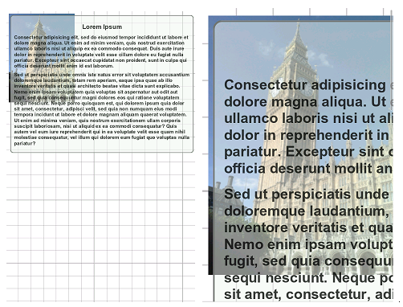
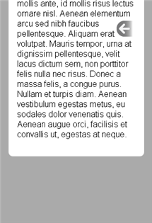
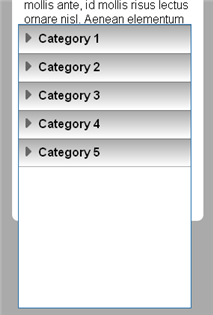
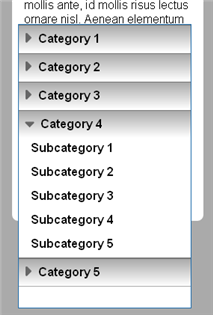
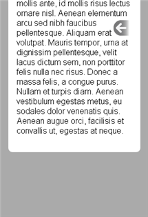
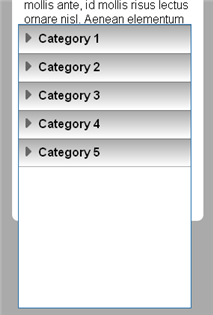
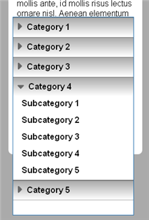
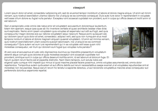

The Mobile Viewport
Applying a viewport is the first and most important step to make web pages presentable on mobile browsers.
Touch-based smartphone browsers are capable of presenting web pages designed for desktop browsers, but the experience needs improvement. When loading full-sized pages, mobile browsers display the entire page at reduced magnification. Users must double-tap or pinch the screen to magnify individual columns of content. Even then, text sized for full-sized browsers is often difficult to read. The following shows how a typical web page layout displays:
.
Users are obliged to go through several steps before text becomes legible, in this case including tipping the handset to increase the column's magnification. When users reach the end of the column, they often experience difficulty reorienting themselves within the page.
The fixed rectangular area within which touch-based smartphone browsers display larger web pages is called the viewport. Applying a viewport meta tag allows you to control how mobile browsers render content within this rectangle, and whether users can use magnification controls.
The following shows a sample screen layout before a viewport is applied. The initially loaded page is zoomed out too far to be legible, while zooming in makes content extending off the right edge of the screen relatively inacessible:

This reflects the browser's default assumption that content should extend 980 pixels wide.
Note: This sample layout displays a flexibly positioned element that adapts to the full width of the screen, along with a fixed-size background image.
To correct this behavior, place the following line within the HTML's head region:
<meta name="viewport" content="width=device-width" />
The following shows the screen layout after the above viewport is applied:

Setting the width to device-width recalculates flexible CSS measurements (such as width:100%) within the width of the handset's screen rather than the default page width. (Tipping the handset maintains the overall width of the content within the wider window.)
On a majority of touch-based mobile browsers, the device-width is 320 pixels. make sure images and other fixed-dimension elements are sized accordingly. The screen height varies significantly among devices, and increases for full-screen web apps that suppress the browser's native screen controls.
Note: Applying a viewport has no effect on desktop browsers. It is interpreted only once when the page loads, and cannot be modified thereafter.
Constraining Touch Response
Applying the above viewport forces content to scroll downward, though it can still extend horizontally or be positioned outside the screen. By default, horizontal panning is disabled when the content fits within the viewport. (A similar height=device-height property may also resize content, but does not disable vertical panning to navigate to overflowing content.)
Note: CSS's translate() transform function offers the best way to stage hidden interface elements off the edge of the screen, since it is a more superficial visual effect that doesn't modify the dimensions of the overall content within the page. (See Transforms for details.)
Once content is well-adapted and accessible for presentation on mobile browsers, there may no longer be any need to use zoom controls to access different portions of the page. To disable the browser's default double-tap and pinch-zoom gestures and ensure that content appears at the proper magnification level, apply the following viewport:
<meta name="viewport" content="width=device-width, initial-scale=1, user-scalable=no" />
As an alternative to disabling scaling, you can apply decimal minimum-scale and maximum-scale values to control the potential range of magnification. See Tipping the Handset for details on how these viewport options and related CSS affects the appearance of landscape-oriented content.
Note: The user-scalable property only affects access to the overall page. touch-enabled web content within that page such as map interfaces may still respond independently to pinch-zoom and drag-scroll gestures.
To disable vertical scrolling, you need to make sure there is not so much content on each page that it would overflow the screen. Screen layouts may also explicitly disable vertical scrolling, but they do so simply by making any overflowing content inaccessible. The following viewport-enabled example presents a full-screen <section> element whose dimensions align with each edge of the screen:
<head> <meta name="viewport" content="width=device-width" /> <style> section { position: absolute; top:0; bottom:0; left:0; right:0; overflow: hidden; } </style> </head> <body> <section> ... </section> </body>
Note: Even if content overflows the screen without being hidden, setting the following CSS renders it inaccessible:
body { overflow: hidden }
Increasingly, mobile browsers allow users to navigate scrollable content elements that appear within a page, but these should be used with care. Users may become confused when the scrolling gestures they expect to scroll within a page instead scrolls within a narrow region of that page. See Scrollbars for an example of a way to use familiar tap gestures to access content that scrolls off the side of the screen. Overall, avoid presenting content such as wide tables that oblige users to scroll horizontally. An example introduced earlier demonstrates how tabular data may be arranged vertically on the smaller screen and presented one row at a time:

Re-styling the display of table cells as block overrides their default horizontal arrangement.
Note: Screen layout should be driven entirely by CSS properties. HTML table elements should be used only for tabular data, and never to arrange elements on the screen. Likewise, do not use the deprecated <frameset> tag to define layouts that indirectly reference other HTML files. Both of these older web layout techniques render poorly on mobile browsers.
Flexible Positioning
After applying a viewport, CSS-based page layout allows designs to flexibly adapt to different screen dimensions. This section demonstrates how the CSS position property can be used effectively for most screen layout.
The following example shows a typical mobile layout, with navigation icons placed at the top of the screen, and a vertically flexible content area:

The main <section> panel relies on position:absolute, with em units offsetting it from the left, right, and top of the screen. To account for overflowing content, the bottom edge is allowed to expand past the element's default min-height. Its generous bottom margin clearly marks the end of the content.
In this example, text overflows the bottom edge of the screen, which forces the fixed navigation items off the top of the screen. (The button at the bottom of the page is offered as a convenience to allow users to jump back to the top to access other navigation options.) To address this accessibility problem, the position:fixed property allows navigation elements to remain on the screen regardless of scrolling.
The following example repositions the navigation items at the bottom of the screen, offset using a percentage to account for potential variation in screen height. The main content area still uses position:absolute as described above, but the navigation area uses position:fixed to keep it on the screen at all times:

This example is defined as a full-screen application. The customary browser controls are removed from the bottom of the screen, which allows the application to use that space. Placing controls at the bottom of the screen allows users to control the application using one hand. Since navigation controls are always available in this example, there is no longer any need to provide a link back to the top of each page.
Despite its usefulness, the position:fixed property is not yet widely deployed among mobile browsers. The Modernizr JavaScript plug-in offers a comprehensive suite of browser feature detection tests, including a method to test support for position:fixed. As an added benefit, Modernizr extends CSS so that classes such as .no-positionfixed can define a set of fallback style sheets. Some JavaScript plug-ins such as Cubiq's iScroll and Sencha Touch emulate position:fixed by defining a screen region that uses touch events to mimic the browser's default scrolling behavior. (Mobile browsers customarily respond with a bounce effect when you hit the edge of a scrollable area, and allow quick flick gestures to keep content scrolling after the finger lifts from the screen.)
Browsers that do not implement position:fixed respond by applying position:absolute, which may serve as a fallback. The following example uses a single expandable icon to access many different navigation options, implemented as accordion lists:
   
   

On supporting browsers, this icon always appears at the same point on the screen regardless of scroll state, but otherwise it scrolls away harmlessly.
See Animations for more information on how to implement the navigation icon's two-stage transition.
Flexible Boxes
This section introduces Level 3 CSS flexible box properties, which may serve as an alternative to positioning in mobile screen layouts.
The following example reproduces the full-screen layout featuring bottom-aligned navigation controls:

The basic markup is structured as follows:
<body> <section> <nav> <a href="#"></a> <a href="#"></a> <a href="#"></a> <a href="#"></a> <a href="#"></a> <a href="#"></a> </nav> <article> <!-- main content --> </article> </section> </body>
To enable flexible box properties, the full-screen <section> is defined as a box rather than the default block. The box-orient property determines how nested child elements are to be visually arranged within the box:
section {
display : -webkit-box;
-webkit-box-orient : vertical;
}
The <nav> element uses the default inflexible formatting, wrapping around the navigation icons with no extra spacing. The <article> element, however is set to be flexible, which allows it to expand tp fill unused screen area:
article {
-webkit-box-flex : 1;
}
The flexibility of boxes is expressed in relative terms. Relative to the <nav> element, the <article> is fully flexible, so it fills all the remaining space not taken up by the <nav> element. (If there were another element with a box-flex of 2, it would take up twice the available area as the <article>.)
Note that the <nav> element is defined first within the markup, but appears below the <article> on the screen. The box-ordinal-group property overrides the default arrangement of boxes, in this case making the <nav> appear second:
nav {
-webkit-box-ordinal-group : 2;
}
Another way to do this would be to reverse the direction in which child elements appear:
section {
-webkit-box-direction : reverse;
}
The <nav> element is itself set to display as a box:
nav {
display : -webkit-box;
-webkit-box-orient : horizontal;
-webkit-box-pack : justify;
}
The box-orient property arranges nested navigation elements horizontally, and the box-pack property distributes them evenly within the available space. (This improves upon the previous version of the layout, which used text justification to distribute the icons.)
Note: CSS's flexible box properties are more widely supported than position:fixed, but overflowing content has to be implemented as scrollable regions, which may not always perform as smoothly as scrolling within an entire page. On iPhone Safari, setting -webkit-overflow-scroll:touch makes scrollable regions perform as well as full-page scrolling. See Scrollbars for information on how to suppress the appearance of scrollbars while keeping content scrollable.
The following example uses flexible box properties and animation to highlight selected images:

Box Sizing
The examples above use absolute positioning to make layout elements snap to both the left and right edges of the screen. Elements specified as width:100% can also be made to fill the screen.
However, there has long been ambiguity among browsers in how an element's dimensions are measured. By default, WebKit-based browsers do not incorporate padding and borders into such measurements, which often leads to unexpected results. To address this problem, Level 3 CSS includes a box-sizing property that allows designers to specify how to apply measurements.
The following example illustrates how failure to specify box-sizing may adversely affect screen layout:

The <section> element that contains navigation elements, hilighted here with a border, is defined with a width of 100% and a height of 6em. The default box-sizing is content-box. Unless it is set to border-box, measurements only apply to the interior content, not to the element's full width. In this case, it means the element doesn't fit within the screen, and becomes much taller than intended.
Note: Despite its name, box-sizing applies to all block elements, not just to flexible box elements described above.
Semantic Tags
The examples above use various HTML5 semantic tags to define high-level regions of the page. These tags serve as a clearer alternative to more abstract block <div> and inline <span> elements that don't reference what kind of content they encapsulate.
None of these semantic tags is required, but they help standardize overall information design, and may help search engines assign relevance to content. Except for the <mark> tag, they are not presented with any default styling.
Block-level semantic tags include:
- <section>: Major groupings of content within a page. For example, separate sections for main content and for user comments.
- <article>: The main item of interest within a page or section.
- <figure>: An image relevant to content within a page, as opposed to a background design element or an image featured within an advertisement.
- <figcaption>: Text describing a <figure>.
- <nav>: Regions reserved for groups of navigation links.
- <header>: Regions of site-wide banner elements such as logos, search boxes, and navigation elements.
- <footer>: Regions of site-wide elements, such as legal notices or contact links, that are not as prominent as <header> elements, and typically appear at the bottom of the page.
- <aside>: Tangentially related content, such as highlighted quotes, items of related interest, and advertisements.
- <hgroup>: Typically a cluster of information about a heading. For example, next to a standard heading tag providing the title of an item, an <hgroup> might feature a related subtitle, author byline, publication date, or a series of categories.
The following HTML5 tags are appropriate to apply semantic meaning to in-line text:
- <mark>: Highlighted text, for example to draw attention to search terms within text. (Appears by default with a yellow background.)
- <time>: Identifies when an item was published or updated.
- <command>: Identifies text used to trigger an interface or other process.
- <output>: Like <command>, but presents the result of an action.
Other newly introduced HTML5 tags offer more specialized functionality. For example, <progress> and <meter> tags represent the status of numeric data. See Input Types for more information.
XXX MT Viewport
The Browser is capable of displaying web pages with complex layouts that are targeted to desktop and laptop-sized screens. Users can double-tap to zoom in on images or columns of text, and can drag the screen around to navigate to items within a page that exceeds the screen's dimensions.
However, viewing desktop-style content on a mobile device does not offer users the best experience. Users spend far too much time and effort panning and zooming around the large page layout, perhaps re-orienting the device to landscape view to be able to read text. It is much better to offer a mobile-optimized interface, which can be deployed along with a desktop-style interface if necessary.
When designing the page, specifying a viewport tells the browser to fit design elements to the width of the mobile device, rather than letting them extend to the default width sized for desktop-style browsers. Add the following viewport specification to the HTML's <head> region:
<meta name="viewport" content="width=device-width" />
A single-column page such as the following ordinarily appears very wide, but with the viewport enabled it conforms to the width of the mobile screen, with no effect on desktop browsers:
<head> <style> section { padding: 1em 1em 10em 1em; } article { background: #fff; border-radius: 1em; padding: 1em; min-height: 70%; } h1 { text-align: center; } </style> </head> <body> <section> <article> <h1>viewport</h1> ... </article> </section> </body>
Here is how the page initially appears without a viewport:

Here is how the page appears after the viewport is added:
Note that to simulate the mobile viewport's appearance on desktop-style browsers, the example above uses max-width CSS to constrain the width of the page. It is not necessary to set the width of the page in a mobile interface that has the viewport enabled.